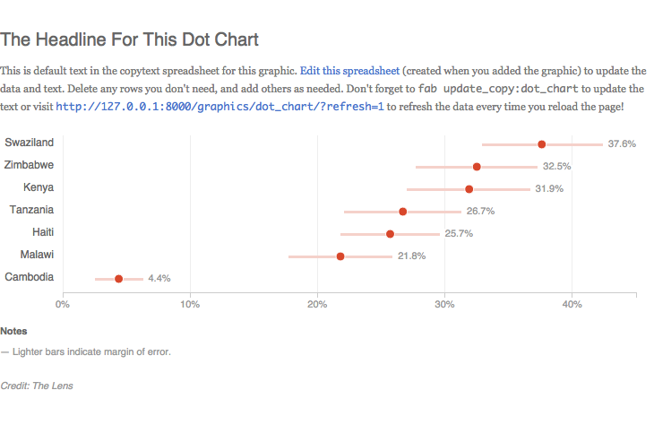

The Headline For This Dot Chart
This is default text in the copytext spreadsheet for this graphic. Edit this spreadsheet (created when you added the graphic) to update the data and text. Delete any rows you don't need, and add others as needed. Don't forget to fab update_copy:dot_chart to update the text or visit http://127.0.0.1:8000/graphics/dot_chart/?refresh=1 to refresh the data every time you reload the page!
